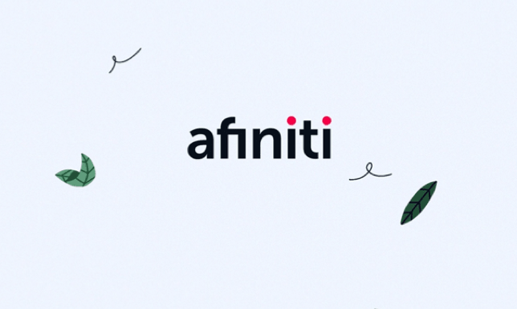

Afiniti Configuration & Rule Engine
- Category: Automation
- Company: Afiniti
- Code Repo: Company BitBucket (Private)
- Language: Python
Afiniti introduced the latest version of its call-pairing AI solution in 2020, developed using C in a Docker-based Linux environment.
Using the REST API exposed by its configuration container, I designed and developed an automation tool for streamlining the configuration process for each client.
The tool, called V6lidation, was split into two parts,
Configuration
• Bulk-Upgrade Functionality - The process of deploying Afiniti on a new client requires configuring thousands of agents and agent skillsets. Through this utility, this process drastically reduced the deployment time and minimzed the risk of human error.• Export Functionality - The ability to easily export the configuration settings from one client so they can be easily deployed on any other client.
Search Engine
• A search engine to quickly sift through thousands of agents and routing entities.Rule Engine
Afiniti's product is a general purpose tool that can be designed to be used at a number of different telephony switches including Avaya, Genesys, and Cisco to name a few. There is a lot of configuration that needs to be changed for each switch and I, along with Fahd Khan, Program Architect at System Integration & Deployment, designed a rule evaluation engine. This engine could be provided a default schema in JSON format for each switch and it would evaluate the schema against the configured settings and raise alerts for any configuration issues.The engine used a recursive, nested approach, allowing users to test multiple rules using basic logical operators like AND, OR, NOT and arithmeitc operations like GREATER THAN, LESS THAN, EQUAL TO, etc.
Technology Stack
• Python (Flask)• HTML, CSS, JavaScript and Bootstrap (Frontend)